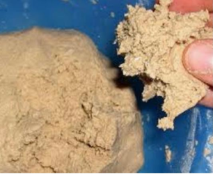

Краткое руководство по
редизайну деревянной мебели
Реставрируй с NIKASON
@mebel_ot_nikason
Предисловие
Реставрация старой деревянной мебели своими руками – сложная, но интересная работа, позволяющая «подарить вторую жизнь» любимым предметам интерьера. Развить творческие способности и почувствовать себя частью истории.
Отреставрированный своими руками предмет интерьера будет украшением и гордостью вашего дома. И несомненно усладой для глаз и души!
Я уверен, с моим руководством у вас все получится!
Никита Колодезников-Матчитов
Основатель мастерской
Важно! Перед началом работы оцените общее состояние каркасы реставрируемого изделия. Если основание проели насекомые или поразила гниль, то лучше отказаться от реставрации.
2
Содержание:
- 1. Место для реставрации - стр.4
- 2. Инструменты и материалы - стр.5
- 3. Краски, масла и лаки - стр.6
- 4. Разборка мебели и снятие фурнитуры - стр.7
- 5. Удаление старого лакокрасочного покрытия - стр.8
- 6. Удаление повреждений: царапины, трещины, сколы и т.д - стр.9
- 7. Подготовка к окрашиванию поверхности - стр.10
- 8. Нанесение краски - стр.11
- 9. Нанесение масла - стр.12
- 10. Нанесение лака - стр.13
- 11. Сборка мебели и установка фурнитуры - стр.14
3
Место для реставрации
В процессе реставрации старой деревянной мебели почти неизбежно придется столкнуться с пылью и неприятными запахами.
Многие защитные и укрывающие составы для дерева также обладают резким запахом.
Потому перенесите работы в нежилое помещение или двор. Если нет других вариантов, то комната в квартире тоже подойдет.
Но перед работой необходимо укрыть прочую мебель целлофановой пленкой и убрать текстиль и ковровые покрытия.
4
Инструменты и материалы
Основные инструменты и материалы, которые вам понадобятся:
1. Строительный фен- подойдет любой строительный фен, который продается в строительных магазинах
2. Смывка лакокрасочного покрытия- продается в строительных и лакокрасочных магазинах.
3. Шлифовальная машина- подойдет любой фирмы. Я предпочитаю Makita и Bosh Бывают.
4. Наждачная бумага разной зернистости (60, 80, 100, 120 и т.д.)
5. Шпатель ARMERO
6. Шпаклевка по дереву- подойдет любой фирмы
7. Столярный клей Titebond
8. Защитная маска и перчатки
9. Краска, лак и масло – подойдет любой фирмы ( Например: краски фирмы Dulux, Tikkurila. масло Varathane, Rubio monocoat)
10. Кисти и валик- кисти с синтетическим ворсом, валик для водных красок
11. Обезжириватель- продают в строительных магазинах. Также подойдет обычный спирт или водка.
12. Шуруповерт- подойдет любой фирмы.

13. Саморезы по дереву
14. Малярный скотч
15. Адгезионный грунт- (Например: адгезионный грунт фирмы Dulux или Tikkurila)
16. Струбцины F-образные – подойдут любой фирмы
17. Отвертка
18. Пассатижи
5
Краски, масла и лаки
На сегодняшний день существует огромный выбор красок, лаков и масел от разных производителей.
Я выбираю премиальную краску фирмы Dulux. Иногда использую краски фирмы Tikkurila. Вы же можете использовать краску любой фирмы, которая вам по душе.
Выбрать покрытие необходимо перед началом работы, так как от вашего выбора будет зависеть объем работы.
Различают несколько видов покрытий:
1. Лаки и краски на водной основе
Лаки и краски на водной основе- образуют прочное и эластичное покрытие устойчивое к царапинам, сколам и мытью.
2. Масляные покрытия
Масляное покрытие - за счет впитывания древесиной масла, масляное покрытие сохраняет и подчеркивает натуральный вид древесины, выделяя текстуру дерева и его рисунок.
Покрытие маслом нуждается в регулярном уходе и обновлении, масло в меньшей степени защищает древесину от влаги, очень чувствительно может реагировать на бытовую химию.
3. Покрытие на основе масла и воска
Покрытие на основе масла и воска - масло проникает в поры древесины и защищает ее изнутри, а воск образует на поверхности эластичное, воздухопроницаемое покрытие и защищает древесину снаружи. Таким образом древесина остается красивой в течении долгого времени.
6
Разборка мебели и снятие фурнитуры
Будет намного проще, если разобрать мебель на отдельные детали. Зачастую достаточно только снять фурнитуру, навесные дверца, извлечь выдвижные ящики. Разбирать ли каркас- смотрите по ситуации. Не нужно разбирать мебель если все детали прочно соединены. Разбирайте в том случае если они расшатаны.
Перед началом разборки, чтобы не перепутать детали сфотографируйте, приклейте малярный скотч и на нем подпишите для каких элементов он предназначен. Так вам будет проще собрать детали после реставрации.
Как разобрать соединения на клею:
Следует разнять расшатавшийся элемент и очистить остатки старого клея с детали, где расшаталось изделие. Если вещь склеена намертво- не стоит ее разбирать, так как демонтаж может привести к вмятинам и прочим травмам.
Склеенные соединения также можно размягчить строительным феном. Направьте фен на клеевой шов , клей размягчиться и вы сможете разобрать склейку. Будьте осторожны чтобы сильным нагревом не испортить детали.
Скрытые соединения частей на деревянных шкантах разбирайте постукиванием киянки и аккуратно разделяют стамеской или шпателем.
Очистка фурнитуры из меди, бронзы и латуни:
Для снятия фурнитуры используйте отвертку, кусачки, пассатиж и гвоздодер. Нужно смешать в равных пропорциях соль и муку и добавить уксуса, чтобы образовалась густая паста. Этой смесью при помощи мягкой ткани нужно протереть фурнитуру пока оно не засияет.
7
Удаление лакокрасочного покрытия
Термический метод:
Если необходимо удалить несколько слоев старой краски выбирайте строительный фен любой фирмы. Краска разогревается под воздействием строительного фена, становится мягкой. После этого покрытие легко удалить при помощи шпателя ARMERO. Работайте осторожно! Если сильно нагреть, то можно повредить основание дерева или поджарить часть краски. Если это случилось дефект можно устранить при помощи шлифовки в ходе работы.
Химический метод:
Для удаления застарелого лакокрасочного покрытия также используют специальную смывку для очистки краски с дерева. Их продают в строительных или лакокрасочных магазинах. На краску наносят слой реактива, который вступает в реакцию и растворяет старый слой покрытия.
Схема:
1. Обязательно оденьте перчатки и маску. Смывка очень токсична. Даже маленькие частицы попавшие на кожу могут вызвать ожог. Закрывайте открытые участки тела.
2. Нанесите смывку на поверхность кистью или распределите шпателем, стараясь не проводить два раза по уже покрытому участку. Не стоит наносить смывку сразу на весь предмет, во избежании ее высыхания, это усложнит снятие. Для лучшего эффекта можно накрыть целлофановой пленкой.
3. Выдерживайте пока покрытие не вспучиться где то 5-15 минут.
4. Размягченное покрытие удалите шпателем ARMERO. Если остались не удаленные участки обрабатываем их повторно.
5. Затем тщательно смойте водой остатки смывки и просушите поверхность.
Механический метод:
Если покрытие уже потрескалось и легко отлетает, то используйте металлический скребок, нож или шпатель. Участки, которые не удалось почистить руками удаляем при помощи шлифмашинки. Используйте для этих целей наждачную бумагу номером 60-80. Если нет шлифмашины шлифование производится наждачной бумагой вручную. Для этого используйте шлифовальным блоком или деревянным бруском обернутым вокруг него куском наждачной бумаги.
8
Удаление повреждений
Трещины в дереве возникают по разным причина. Они могут появляться из за естественной усушки, механических повреждений и других факторов. Для их устранения используют широкий арсенал средств- шпатлевки по дереву, клеевые составы, герметики итд.
Я обычно использую шпатлевку по дереву, твердый мебельный воск, смесь столярного клея и древесной пыли и бруски дерева для наращивания отколотых небольших фрагментов.
1. Шпатлевка по дереву любой фирмы
2. Смесь клея Titebond и древесной пыли (мелкая опилка) : Смешайте 1 часть древесной пыли и 2-3 части клея Titebond до получения густой консистенции для нанесения мастихином или шпателем.
3. Для исправления более крупных повреждений рекомендуется вставлять кусочки (бруски) дерева. Бруски дерева подберите по размеру отколотого фрагмента, наложив на поврежденное место, очерчите на мебели форму бруска, сделайте выемку до нужной глубины и строгайте как можно лучше внутренние стенки углубления. Затем уже накладывают брусок на отверстие. Если он входит плотно, промежутки между краями бруска и выемки намажьте клеем Titebond все внутренние стороны выемки и загоните брусок в паз несколькими ударами молотка. Излишки клея уберите тряпкой. Скрепите F-образной струбциной. Подождите 3 часа. Снимите струбцину и отшлифуйте приклееный брусок пока она не примет форму реставрируемой поверхности. При ремонте вертикальных поверхностей (например ножки стола или стула) следует пользоваться бечевкой, туго стягивая приклеиваемый кусок дерева.
4. Твердый мебельный воск для мелких трещин , сколов и царапин. Применять восковый карандаш разрешается на деревянной, лакированной и ламинированной поверхности. В магазинах предоставлено разнообразие цветовой гаммы. Для использования твердого вида применяется строительный фен, зажигалка. Для этого необходимо расплавить воск и нанести на царапину, стол и разровнять. При необходимости поверхность зашлифовать.
9
Подготовка поверхности к окрашиванию
Если собираетесь нанести масло, лак или краску обязательно отшлифуйте поверхность в несколько этапов:
1. Начинайте с грубой наждачной бумаги номером 60-80. Он уберет на поверхности все глубокие царапины и сколы.
2. Далее отшлифуйте номером 100-120 для выравнивания, гладкости поверхности и чтобы удалить следы грубой наждачной бумаги. Если как следует не отшлифовать при нанесении масла или лака красящие вещества проявят все погрешности шлифовки (грубая наждачка оставляет царапины на дереве).
10
Нанесение краски
1. Удалите пыль, грязь и мусор
2. Протрите слегка влажной тряпкой
3. Обезжирьте ( обезжиривателем или спиртом)
4. Заклейте малярным скотчем поверхность, которая не будет окрашена
5. Для лучшей адгезии можно нанести адгезионный грунт
6. Нанесите 2-3 слоя краски
7. Дожидаясь полного высыхания предыдущего слоя
11
Нанесение масла
1. Удалите пыль, грязь и мусор.
2. Протрите слегка влажной тряпкой
3. Обезжирьте ( обезжиривателем или спиртом)
4. Заклейте малярным скотчем поверхность, которая не будет окрашена
5. Сначала наносится первый слой масла. Масло кладется кистью или хлопчатобумажной тканью тонким слоем и равномерно распределяется по поверхности вдоль волокон.
6. Снимать излишки масла нужно сразу, если этого не сделать, масло высохнет и образует корку, которую потом удалить будет очень сложно. Чтобы убрать лишнее масло, нужно протереть это место сухой тряпкой. Втирать масло надо до того момента, пока тряпка будет собирать масло.
7. Далее поверхность полируют мягкой тканью. После этого все мокрые участки насухо вытирают хлопчатобумажной тряпкой.
8. К нанесению второго слоя приступают не ранее 5 часов, в некоторых случаях необходимо выждать до 12 часов. Это зависит от вида масла.
9. Повторная обработка производится аналогично первой. Количество слоев зависит от состояния поверхности, древесной породы и вида масла. Обычно хватает 2-3 слоя.
12
Нанесение лака
1. Удалите пыль, грязь и мусор.
2. Протрите слегка влажной тряпкой
3. Обезжирьте ( обезжиривателем или спиртом)
4. Заклейте малярным скотчем поверхность, которая не будет окрашена
5. Наносим первый слой. Наносить слой лака можно кистью и валиком. Наносится лак вдоль волокон, после обработки следует выждать определенное время, которого достаточно будет для высыхания слоя. Рекомендованное время высыхания указывается производителем на упаковке.
6. Шлифуем наждачной бумагой с мелким зерном номером 100-120. Протираем образовавшуюся пыль влажной тряпкой.
7. Наносим второй слой лака строго вдоль волокон. При выполнении работы нужно следить, чтобы не появлялись потеки. Исключить их можно, если на рабочий инструмент брать небольшое количество лака. Количество слоев определяется индивидуально, но в любом случае нужно нанести минимум 2 слоя.
13
Сборка мебели и установка фурнитуры
1. Окрашенные детали собирайте крайне осторожно, чтобы не повредить покрытие.
2. Проверьте все детали правильно ли они расположены
3. Нанесите столярный клей на шипы и пазы. Работайте быстро и аккуратно, чтобы клей не успел высохнуть.
4. Соедините все детали мебели и закрепите с помощью струбцин если они нужны
5. Излишки клея уберите, когда клей застынет с помощью ножа
6. Струбцины можно убрать через 3-4 часа.
7. Устанавливаем все детали мебели, которые были отреставрированы отдельно (выдвижные ящики, двери и фурнитуру).
Для установки дверей и фурнитуры используйте саморезы и шуруповерт. Если нет шуруповерта используйте обычную отвертку.
После реставрации можно вернуть на место старую очищенную фурнитуру или заменить ее на новую. Все зависит от вашего желания и состояния старых деталей.
14